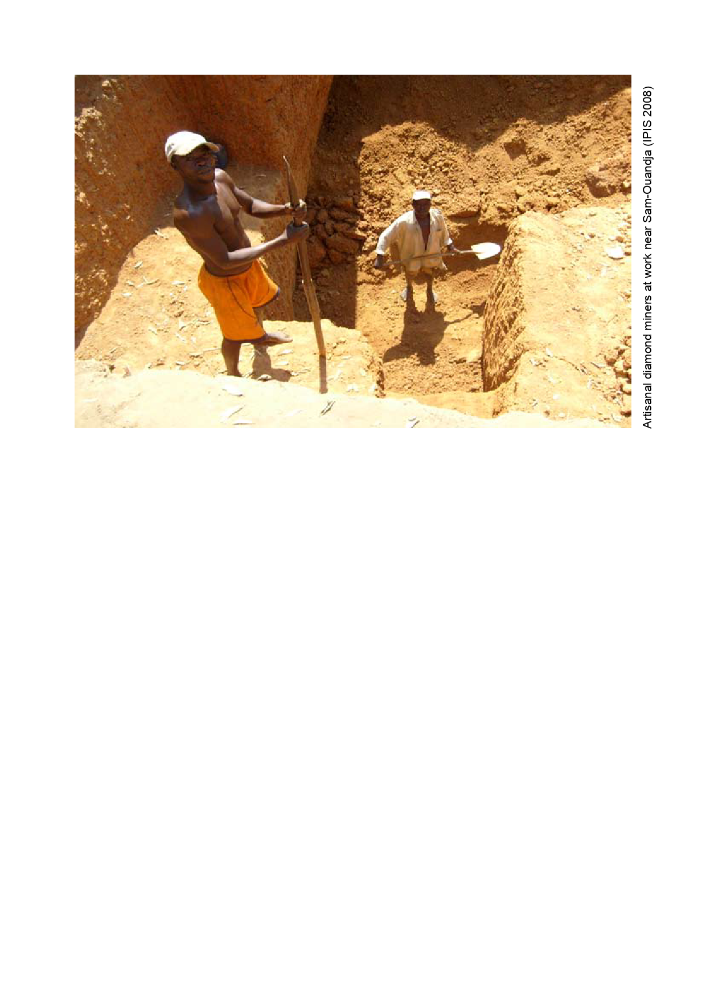

Conclusion
Although there is no large-scale fighting and only little open warfare, one can rightly say that few
regions of the CAR are really secure and that in fact the majority of the territory is in a permanent
state of insecurity.
This report has tried to disentangle the accumulation of conflicts and to answer the questions: who
wields weapons where and for what reasons?
The APRD is the most visible of the rebel groups. It controls a significant part of one of the most
populated regions in the country. It was the last to sign a peace agreement with the government and
it has broken the ceasefire on several occasions. Although an active conflict party, it is not offensive.
Currently, it shows no tendency to extend the territory under its control. One can therefore assume that
it agrees with the current status quo and that it is waiting for the results of the ongoing peace process.
There might be two reasons for this position. On the one hand, it is possible that the
APRD is seeking a way out of the armed struggle. The political leadership might have
come to the conclusion that its insurgency will not succeed in toppling the incumbent
government and that in order to survive, it needs to strike a deal (including amnesty).
On the other hand, and this is more likely for the field commanders, the APRD could be hoping that the
peaceprocesswillprovideananswertoitsgrievances.AlthoughthegrievancesoftheAPRDarenotwell
articulated and nicely listed in a political manifesto, it seems they explain, at least partially, its motivation
to fight and its behaviour in the field. This is certainly the case for the Lakoué branch of the movement.
It is interesting to note that the APRD area comprises all of the ethnic Sara territory in the North
and Northwest of the CAR. However, several other ethnic groups (partly) live under APRD control
and the incidents on the ground do not indicate that ethnic warfare is going on.
The UFDR has more means than the APRD but it has not engaged the FACA in 2008. On the contrary,
it is cooperating with them. The UFDR of Damane is a loyal participant in the peace process. Besides
the fact that it is less hostile to the FACA and the government in Bangui, its behaviour is comparable
to that of their counterparts in the North(west). Throughout 2008, the UFDR has not shown any
interest in power or profit. It has kept control over those areas inhabited by its ethnic group and it has
41